등산로 지도

여행 명소 지도
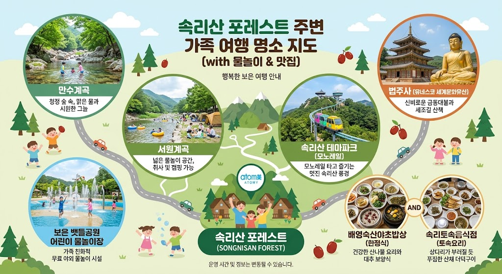
물놀이 지도
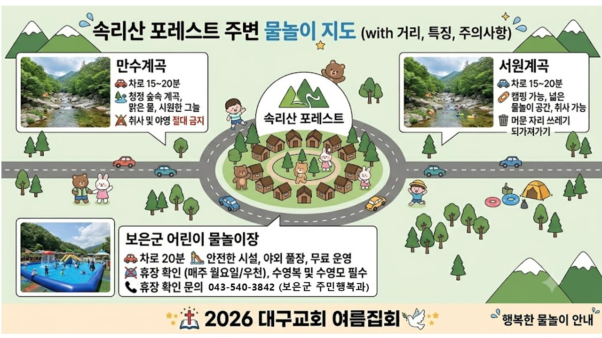
맨발걷기 추천 코스 지도
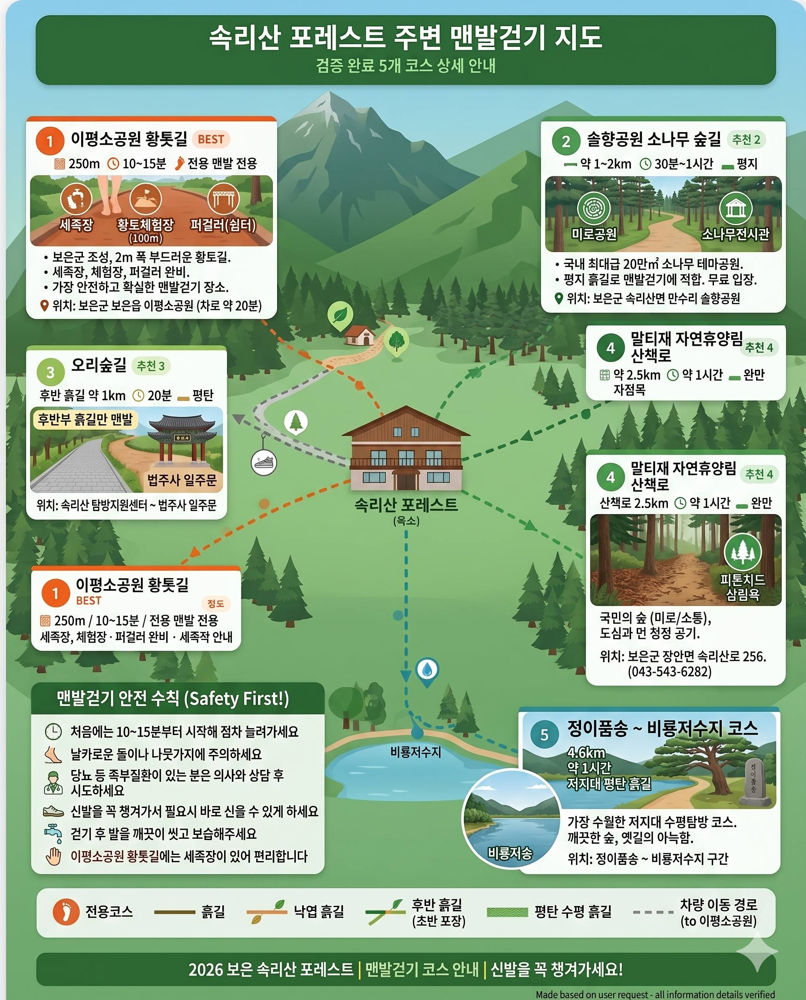
TIP 지도를 터치하면 크게 볼 수 있습니다.
아이와 함께하는 가족 코스
코스 1. 액티비티를 좋아하는 아이들!
액티비티
속리산 테마파크 모노레일 - 귀여운 모노레일을 타고 산속을 오르며, 목탁봉 전망대에서 속리산 절경을 한눈에!
말티재 전망대 - 열두 구비 구불구불 고갯길을 내려다보는 아찔한 전망대
김천식당 & 이원식당 - 보은읍 방향 길목. 순대/곱창전골, 맵지 않은 맑은 올갱이 해장국은 아이들 밥 말아 먹이기에 딱!
모노레일전망대맛집
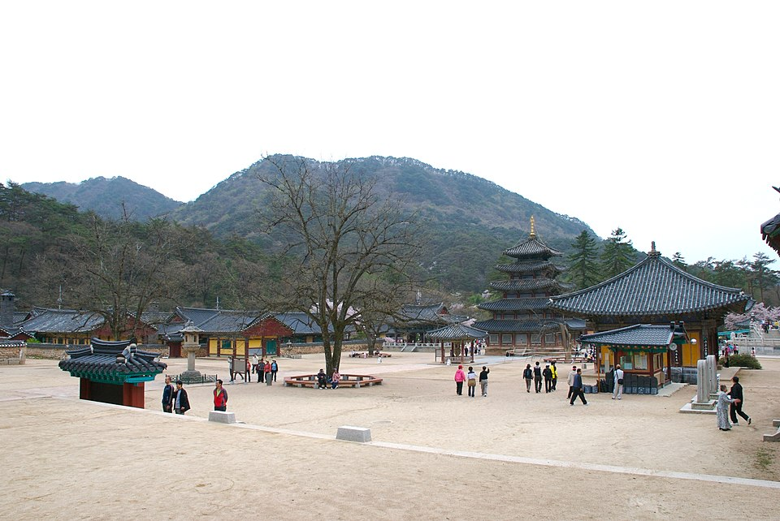
코스 2. 자연 속 가벼운 산책
산책
법주사 & 세조길 - 거대한 금동미륵대불과 문화재 관람 + 흙길과 나무 데크로 정비된 세조길은 유모차도 OK!
정이품송 - 법주사 가는 길목, 세조의 가마 전설이 있는 600년 소나무. 인증사진 필수!
속리토속음식점 / 배영숙산야초밥상 - 법주사 초입 산채거리. 건강한 한정식과 파전, 버섯전 등 아이들 반찬도 다양
세조길법주사산채정식
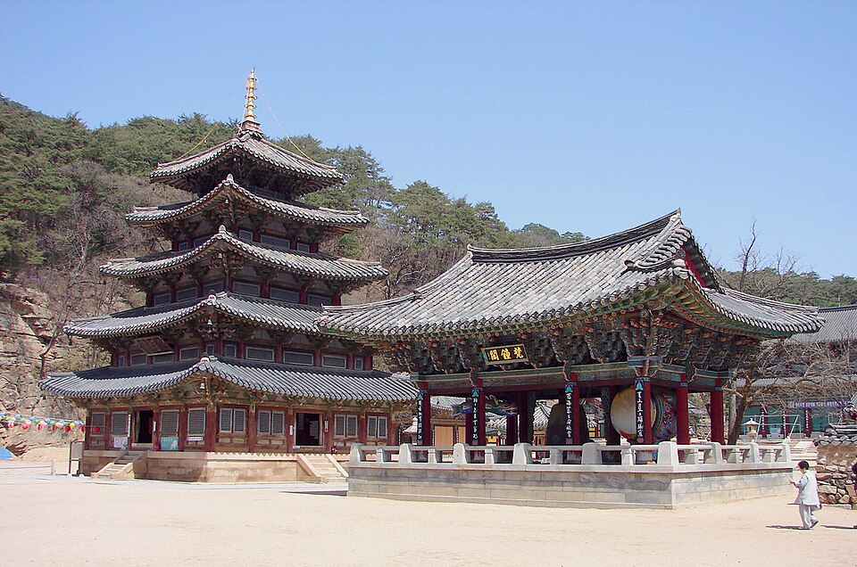
코스 3. 공원 & 숲 체험
공원
솔향공원 (스카이바이크) - 소나무 숲 위를 자전거로 시원하게! 홍보 전시관과 미로공원도 있어 아이들이 좋아합니다.
화성가든 - 보은 읍내 대추 특화 한정식. 달달한 대추 불고기는 아이들 입맛에도 딱!
스카이바이크미로공원대추불고기
트래킹 코스
세조길 코스초급
4km / 약 1시간 20분
세조 임금이 거닐던 옛길. 소나무 숲과 계곡이 어우러진 평탄 산책로로 초보자·가족에게 최적.
가족 추천계곡
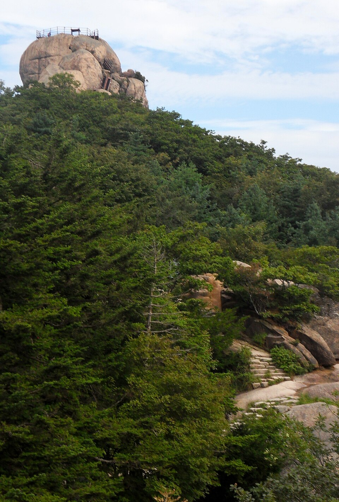
문장대 1코스중급
3.1km / 약 2시간 30분
법주사 → 세심정 → 문장대(1,054m). 정상 암반에서 속리산 주능선 파노라마 조망.
절경인기 코스
문장대 2코스중급
9.7km / 약 6시간
문장대까지의 장거리 코스. 다양한 속리산 경치를 즐길 수 있는 본격 등산 코스.
장거리본격 등산
천왕봉 코스고급
16km / 약 7~8시간
법주사 원점회귀 최장 코스. 1,058m 천왕봉을 비롯 속리산의 모든 절경을 섭렵하는 풀코스.
전망 최고풀코스
묘봉이 옛길초급
4.6km / 약 1시간
완만한 숲길로 가볍게 걷기 좋은 코스.
힐링숲길
옥녀봉 코스중급
7.4km / 약 4시간 30분
속리산의 숨은 비경을 만날 수 있는 코스.
비경
도명산 코스중급
8km / 약 4시간 30분
중급
말티재 자연휴양림 산책초급
소나무 가득한 말티재 휴양림 내 힐링 산책로. 피톤치드 삼림욕 + 야영도 가능.
힐링삼림욕
물놀이 장소
만수계곡계곡
차로 15~20분 / 청정 숲속 계곡, 맑은 물, 시원한 그늘
수정처럼 맑고 차가운 청정계곡. 발 담그기·물놀이 최적.
취사 및 야영 절대 금지 (국립공원)
청정족욕
서원계곡계곡
차로 15~20분 / 캠핑 가능, 넓은 물놀이 공간
취사 및 캠핑 가능. 넓은 공간에서 여유로운 물놀이.
머문 자리 쓰레기 되가져가기
캠핑 가능넓은 공간
세조길 계곡계곡
세심정 일대 / 세조길 산책 중 만나는 시원한 계곡
아이들도 안전하게 물놀이 즐길 수 있는 완만한 수심.
가족트래킹 병행
보은군 어린이 물놀이장물놀이장
차로 20분 / 안전한 시설, 야외 풀장, 무료 운영
보은 뱃들공원 내 가족 친화적 무료 야외 물놀이 시설
수영복 및 수영모 필수 / 휴장: 매주 월요일·우천
휴장 확인 문의: 043-540-3842 (보은군 주민행복과)
무료안전가족
숲체험휴양마을 수영장수영장
속리산로 596 숲체험휴양마을 내 / 여름 시즌 운영
족욕장·온수스파도 함께 이용 가능.
수영장스파
액티비티
속리산 짚라인 (e레포츠)스릴
속리산면 속리산로 596 / 8개 코스
속리산 산세를 가르는 짜릿한 짚라인 체험!
사전 예약 필수: 043-543-7997
짚라인예약 필수
속리산 테마파크 모노레일가족
모노레일 타고 즐기는 멋진 속리산 풍경
목탁봉 전망대에서 속리산 절경 한눈에!
모노레일가족 추천
ATV·산악바이크오프로드
보은 일대 산악 지형을 달리는 ATV 체험
난이도별 코스 운영, 어린이 동반 탑승 가능
ATV가족
솔향공원 스카이바이크자전거
소나무 숲 위를 자전거로 시원하게 달리기!
소나무 홍보 전시관 + 미로공원도 함께 즐기기
공원스카이바이크
별빛 관측·야경야간
말티재 일대 / 도심에서 멀리 떨어진 맑은 밤하늘
속리산 말티재에서 즐기는 별자리 관측
야간낭만
추천 맛집
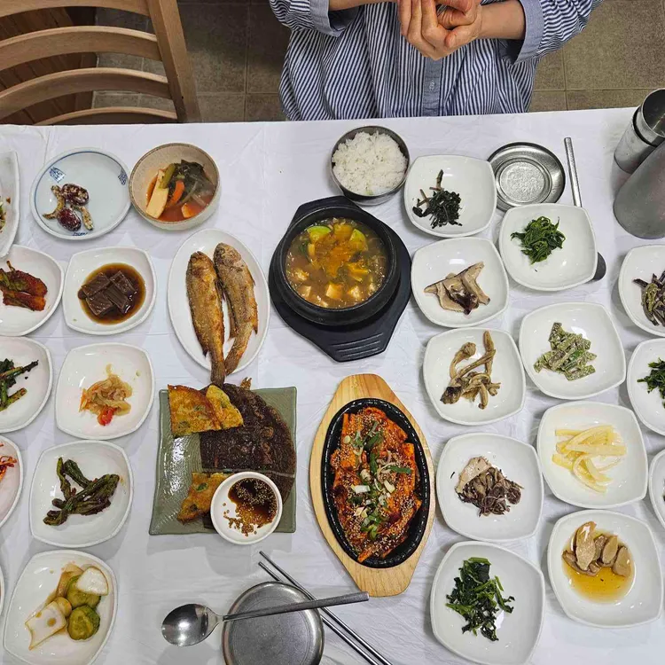
옛고을산채정식
충북 보은군 속리산면 법주사로 250
043-543-3930 / 매일 08:30~20:00
30여 가지 나물 반찬의 푸짐한 산채정식. 산채불고기정식, 자연산버섯전골, 능이버섯해장국도 인기.
산채정식버섯전골푸짐
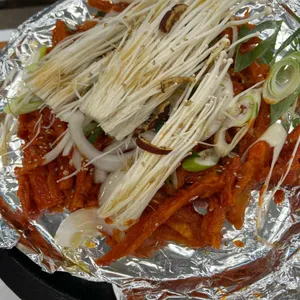
배영숙산야초밥상비빔밥
충북 보은군 속리산면 법주사로 84
043-544-5131 / 법주사 하산 후 들르기 좋은 곳
속리산 100가지 산야초 발효액으로 만든 건강식. 대추정식, 속리산정식, 소나무정식. 대추 장아찌와 야초 발효효소가 특별.
야초 비빔밥대추정식건강식
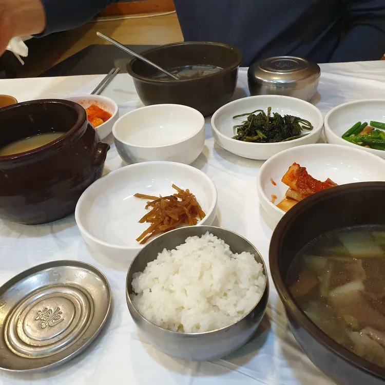
속리토속음식점토속요리
충북 보은군 속리산면 법주사로 261
043-543-3917 / 매일 08:00~20:30 (라스트오더 19:30)
상다리가 부러질 듯 푸짐한 산채 더덕구이. 즉석에서 부치는 파전·버섯전, 아이들 반찬도 다양. 입식·좌식 모두 가능, 아기의자 있음.
더덕구이산채정식가족
이호정버섯전골
충북 보은군 속리산면 법주사로 인근
속리산 버섯전골과 산채정식으로 현지인에게 오랫동안 사랑받는 터줏대감.
버섯전골현지인 맛집
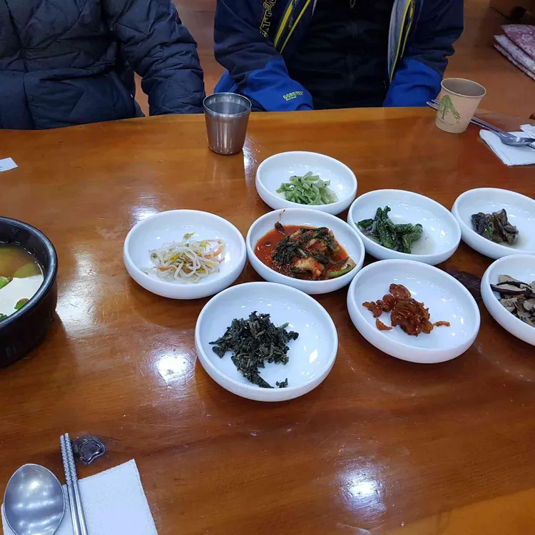
영남식당한정식
충북 보은군 속리산면 법주사로
043-543-3924
보은 특산품 대추를 활용한 한정식. 능이한방백숙, 능이해장국도 인기. 보은 대추는 달고 향이 깊어 전국 최고!
대추 한정식능이백숙보은 특산
🍗
상판식당토크닭
충북 보은군 속리산면 법주사로 13 (상판리)
속리산 입구의 토크닭 전문점. 닭볶음탕·닭도리탕 등 든든한 한 끼.
토크닭닭볶음탕
🍲
화성가든대추
충북 보은군 보은읍 삼산로 20-35
043-544-2035 / 대추 특화 한정식
달달한 대추 불고기가 아이들 입맛에도 잘 맞습니다.
대추 불고기가족
🍜
김천식당순대/곱창
충북 보은군 보은읍 삼산로1길 25-4
043-543-1413 / 매일 08:00~21:00 (15:00~17:00 브레이크)
허영만의 백반기행 출연! 전설의 대창순대와 곱창전골.
순대곱창전골
🍳
이원식당해장국
충북 보은군 보은읍 뱃들로 34
043-543-1781
맵지 않은 맑은 올갱이 해장국. 아이들 밥 말아 먹이기에 아주 좋습니다.
올갱이 해장국아이 OK
속리산 주변 맨발걷기 추천 코스 (검증 완료)
맨발걷기(어싱) 효과
맨발로 흙길을 걸으면 체내 활성산소 제거, 혈액순환 개선, 스트레스 해소, 수면 질 향상에 도움이 됩니다. 속리산 주변의 소나무 숲 흙길은 피톤치드까지 더해져 최고의 맨발걷기 환경입니다.
맨발로 흙길을 걸으면 체내 활성산소 제거, 혈액순환 개선, 스트레스 해소, 수면 질 향상에 도움이 됩니다. 속리산 주변의 소나무 숲 흙길은 피톤치드까지 더해져 최고의 맨발걷기 환경입니다.
이평소공원 황톳길BEST
250m / 10~15분 / 전용 맨발걷기 코스
보은군이 1억7천만원을 투입해 조성한 전용 맨발걷기 황톳길. 폭 2m의 부드러운 황토 흙길에 세족장(발 씻는 곳), 100㎡ 황토 체험장, 퍼걸러(쉼터)까지 완비되어 있어 가장 안전하고 확실한 맨발걷기 장소입니다.
위치: 보은군 보은읍 이평소공원 (차로 약 20분)
전용 코스황토길세족장초보 추천
솔향공원 소나무 숲길추천 2
약 1~2km / 30분~1시간 / 평지
국내 최대급 20만㎡ 소나무 테마공원. 평지 흙길 산책로가 조성되어 있어 맨발걷기에 적합합니다. 미로공원, 소나무 전시관과 함께 즐길 수 있으며 무료 입장입니다.
위치: 보은군 속리산면 만수리 솔향공원
소나무 숲평지가족무료
오리숲길 (후반 흙길 구간)추천 3
후반 흙길 약 1km / 20분 / 평탄
소나무 숲터널이 아름다운 명품 코스. 단, 초반~중반은 포장 탐방로이므로 후반부 흙길 구간에서만 맨발걷기를 추천합니다. 법주사 일주문 인근에서 신발을 벗고 걸어보세요.
주의: 초반 포장구간에서는 신발 착용 필수
위치: 속리산 탐방지원센터 ~ 법주사 일주문
숲터널후반만 흙길명품 코스
말티재 자연휴양림 산책로추천 4
산책로 2.5km / 약 1시간 / 완만
소나무 숲 속 낙엽과 흙이 깔린 산책로. 피톤치드 삼림욕과 맨발걷기를 동시에 즐길 수 있습니다. 도심에서 멀어 공기가 청정하며, 국민의 숲(미로의 숲, 소통의 숲) 구간도 있습니다.
위치: 보은군 장안면 속리산로 256 (043-543-6282)
낙엽길삼림욕힐링
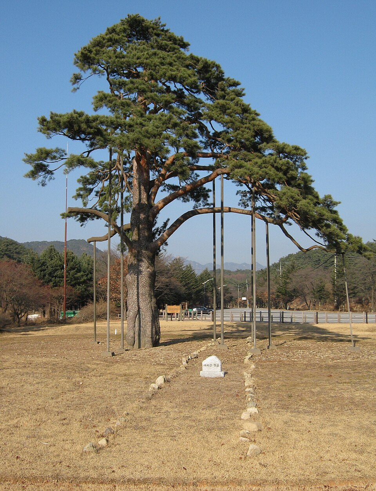
정이품송 ~ 비룡저수지 코스추천 5
4.6km / 약 1시간 / 저지대 평탄 흙길
속리산 등산 코스 중 가장 수월한 저지대 수평탐방 코스. 비룡저수지와 깨끗한 숲, 옛길의 아늑함을 느낄 수 있으며 흙길이 이어져 맨발걷기에 적합합니다. 천연기념물 정이품송도 함께 감상하세요.
위치: 정이품송 ~ 비룡저수지 구간
흙길저수지평탄정이품송
맨발걷기 안전 수칙
- 처음에는 10~15분부터 시작해 점차 늘려가세요
- 날카로운 돌이나 나뭇가지에 주의하세요
- 당뇨 등 족부질환이 있는 분은 의사와 상담 후 시도하세요
- 신발을 꼭 챙겨가서 필요시 바로 신을 수 있게 하세요
- 걷기 후 발을 깨끗이 씻고 보습해주세요
- 이평소공원 황톳길에는 세족장이 있어 편리합니다
- 처음에는 10~15분부터 시작해 점차 늘려가세요
- 날카로운 돌이나 나뭇가지에 주의하세요
- 당뇨 등 족부질환이 있는 분은 의사와 상담 후 시도하세요
- 신발을 꼭 챙겨가서 필요시 바로 신을 수 있게 하세요
- 걷기 후 발을 깨끗이 씻고 보습해주세요
- 이평소공원 황톳길에는 세족장이 있어 편리합니다
문화 체험
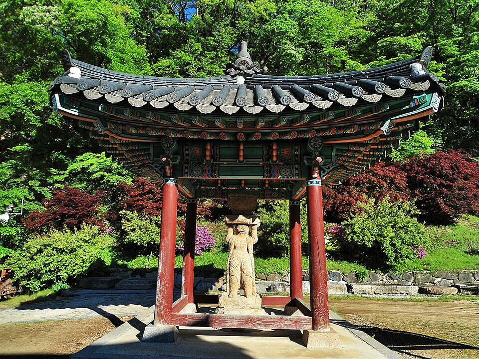
법주사유네스코
유네스코 세계문화유산 / 평점 4.5
신라 진흥왕 553년 창건. 국보 팔상전(목조탑)·쌍사자석등 등 국보 3점 보유. 한국 최대 사찰 중 하나. 거대한 금동미륵대불이 압권!
입장료: 성인 5,000원 (문장대 코스 함께 이용 가능)
국보유네스코교육
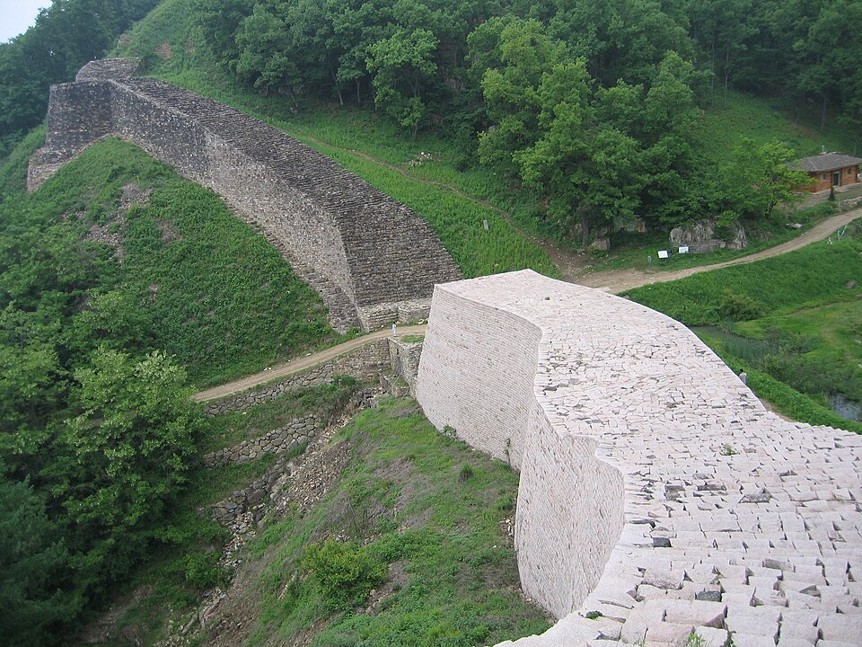
삼년산성사적
사적 제235호 / 평점 4.4
신라 자비왕 때 축성. 148승 1패의 불패 산성. 둘레 약 1.8km 성벽 트레킹도 인기.
역사 유적성벽 산책
정이품송천연기념물
천연기념물 제103호 / 수령 600년
세조가 가마가 걸리지 않도록 가지를 들어올려 정이품 벼슬을 하사한 전설의 소나무. 인증사진 필수!
천연기념물스토리텔링
템플스테이체험
법주사 / 복천암
하룻밤 머물며 공양·예불·명상 체험. 마음의 평화를 찾는 힐링 프로그램.
명상1박 체험